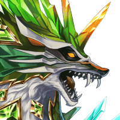

ティリス
大丈夫だよ。 私たちも、ついさっき来たばかりだし。
ルチアナ
勘違いしているかもしれないから、 まず、言っておくわ。
リアナ
この零壁の密道を抜けた先にある 神狼様がおわすとされる場所です。
ルチアナ
女神…… 私はあなたに気を許したわけじゃない。
ルチアナ
あなたが人間に 敵対する存在じゃないとしても、
リアナ
神狼様を倒そうだなんて、 そんな恐ろしいこと……。
ルチアナ
嵐が過ぎるのを待つように、 黙って耐えていろというの！？
ティリス
えっ……！ なに、この大きな揺れは……！？
ＳＣＯＵＴ－Ｆ０３
ツヨイチカラガ、キュウソクニ セッキンシテイル……！
ＳＣＯＵＴ－Ｆ０３
ブンセキニヨルト、ベクタスデ、タタカッタ フウシンキト、ドウシュノモノダ！！
レダ
この世界の封神儀が ここに近づいているというの……！？
レダ
捜す手間が省けたのはありがたいけど…… よりにもよって、こんな時に！！


？？？
ルチアナ
こ、こんな巨大な狼…… これまで見たことないわ……！
レダ
こいつは…… おそらく私たちの目的としている存在よ！
レダ
ティリス！ルチアナたちを守りつつ、 私たちのフォローを！！
レダ
Shou-chan、分かってるとは思うけど気を抜かないでね！！